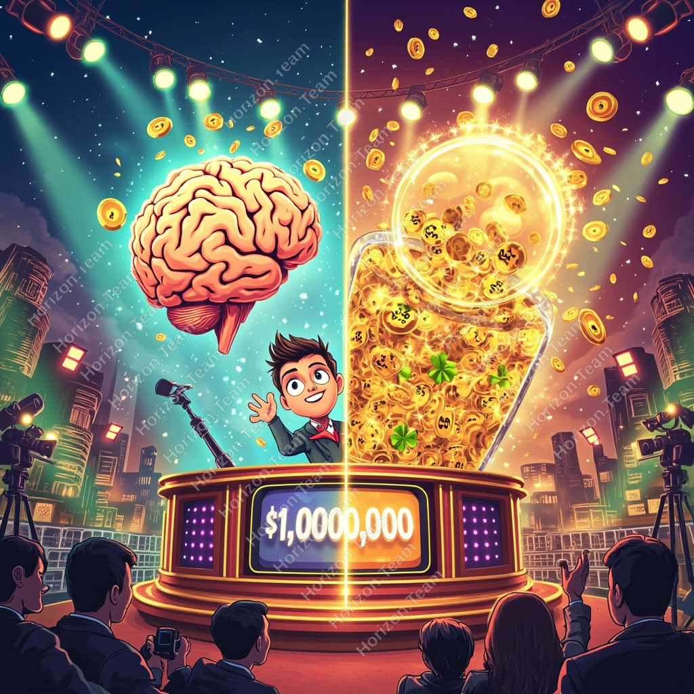

知識與幸運的終極對決
百萬富翁遊戲 VS 六合博彩二獎：邊個更能幫你贏取一百萬？
📖 序章：知識與幸運，邊個更著數？
每個人都曾幻想過兩個場景——
場景一：你坐在《百萬富翁》錄影廠內，燈光打在你身上，主持人大聲問：「恭喜你，已經答對14條題目，呢一刻你可以選擇帶走 $500,000，或者繼續挑戰最後一條，赢取 一百萬港幣！」
場景二：你排隊喺投注站，對著49個號碼苦思冥想，心入面不斷念叨：「今日會唔會係我嘅幸運日？」
呢兩個場景，分別代表咗兩種截然不同嘅人生哲學：
🎓 知識派相信——天下間沒有免費午餐，每一分收穫都嚟自學習同準備。
🍀 幸運派相信——命運喺天，半點不由人，倒不如信一信風水命理。
今次，我哋唔傾意識形態，我哋用數字說話。
📌 重要前提：本文唔係比較百萬富翁與六合博彩頭獎——兩者獎金差距太大，無意義。我哋係用獎金相若嘅百萬富翁一百萬，去比較六合博彩二獎（中5.5個字，獎金約數十萬至一百萬，視平分人數而定）。
🎬 第一章：百萬富翁——知識係武器
遊戲規則
《百萬富翁》（Who Wants to Be a Millionaire）係一款問答遊戲，1998年喺英國首次播出，其後風靡全球，包括2001年嘅香港版本。
遊戲核心：參賽者需要連續答對 15 條多重選擇題，每條題目有 4 個選項（A、B、C、D）。只要行到尾關，你就能带走一百萬港幣。
三個錦囊
| 錦囊名稱 | 功能 | 使用次數 | 本分析假設 |
|---|---|---|---|
| 🔪 50:50 | 去掉兩個錯的答案，剩2個選項 | 每題1次，共3次 | 50% 準確率 |
| 📞 打電話 | 致電朋友，請求協助答題 | 每題1次，共3次 | 100% 準確率 |
| 🙋 問觀眾 | 現場觀眾投票表決 | 每題1次，共3次 | 100% 準確率 |
🧮 第二章：百萬富翁概率計算
場景一：完全靠運氣（無錦囊）
如果參賽者完全唔知答案，只係亂估——
P(全對) = (1/4)^15 = 1 / 1,073,741,824
即係 約 10 億分之 1
場景二：3個錦囊，50:50 = 50% 準確率（本分析採用）
假設參賽者將3個錦囊用在3條最難的題目，剩低12條靠自己4選1：
| 題目 | 題數 | 機制 | 正確概率 |
|---|---|---|---|
| 使用 50:50 | 1 條 | 去掉2個錯，2揀1 | 1/2 |
| 打電話朋友 | 1 條 | 朋友100%準確 | 1/1 |
| 問現場觀眾 | 1 條 | 觀眾100%準確 | 1/1 |
| 靠自己（4選1） | 12 條 | 純運氣 | (1/4)^12 |
= 1/2 × 1/16,777,216
= 1 / 33,554,432
即係 約 3,355 萬分之 1
💡 關鍵洞察
呢個計算係假設參賽者對所有題目都一無所知。但現實中，參賽者對每條題目嘅確定程度都唔同——呢個就係知識嘅價值所在。
🎰 第三章：六合博彩二獎——等值比較
遊戲規則
六合博彩係香港唯一的合法彩券，每期從 49 個號碼中攪出 7 個號碼（6個攪出號碼 + 1個特別號碼）。
二獎概率計算（中5.5個字）
二獎條件：選中 5 個攪出號碼 + 特別號碼
二獎組合數 = C(6,5) × C(1,1) = 6 × 1 = 6 種
P(二獎) = 6 / 13,983,816 = 1 / 2,330,636
即係 約 233 萬分之 1
二獎 VS 頭獎 比較
| 獎項 | 中獎條件 | 組合數 | 概率 | 約等於 |
|---|---|---|---|---|
| 頭獎 | 6個字 | 1 | 1 / 13,983,816 | 1,400萬分之1 |
| 二獎 | 5.5個字 | 6 | 1 / 2,330,636 | 233萬分之1 |
| 三獎 | 5個字 | 258 | 1 / 54,237 | 5.4萬分之1 |
⚔️ 第四章：百萬富翁 VS 六合博彩二獎
VS
六合博彩二獎：1 / 2,330,636
| 項目 | 百萬富翁 | 六合博彩二獎 |
|---|---|---|
| 獎金（港幣） | $1,000,000 | 約 $50萬 - $100萬（視乎人數） |
| 中獎概率 | 1 / 33,554,432 | 1 / 2,330,636 |
| 約等於 | 3,355 萬分之 1 | 233 萬分之 1 |
| 倍數差距 | 百萬富翁比二獎難約 14 倍 | |
| 所需能力 | 知識 + 少量運氣 | 100% 運氣 |
| 可控程度 | 高（可武裝自己） | 零（完全被動） |
難約 14 倍
🧠 第五章：知識的力量——逐步改寫概率
上文嘅計算，係假設參賽者對所有12條靠自己嘅題目都係完全隨機猜測。但現實完全唔係咁。
現實世界嘅概率分佈
💡 核心論點：每確認一條答案，概率就提升一次
假設你有一定程度嘅知識，唔係所有題目都一無所知。當你能夠確認一條題目嘅答案，概率就會瞬間改變：
| 確認題數 | 剩低隨機題數 | 概率計算 | 百萬富翁概率 | VS 六合二獎 |
|---|---|---|---|---|
| 0 條（全部靠估） | 12條 × 1/4 | (1/4)^12 | 1 / 16,777,216 | 難 7.2 倍 |
| 3 條確認 | 9條 × 1/4 | (1/4)^9 | 1 / 262,144 | 容易 8.9 倍！ |
| 6 條確認 | 6條 × 1/4 | (1/4)^6 | 1 / 4,096 | 容易 569 倍！ |
| 9 條確認 | 3條 × 1/4 | (1/4)^3 | 1 / 64 | 容易 36,416 倍！ |
| 12 條全部確認 | 0條 | — | 1 / 1（100%！） | 知識碾壓幸運！ |
🍀 第六章：幸運的真相——你無法控制的事
六合博彩二獎概率（233萬分之1）確實比百萬富翁（3,355萬分之1）靚好多。但呢個數字背後有一個殘酷嘅真相：
🚨 你對結果毫無控制力
不論你讀幾多書、幾努力準備、幾虔誠祈禱——你對六合博彩嘅結果完全無法影響。每一次攪珠都係獨立事件，上一次中獎唔會提高或降低下一次嘅概率。
知識 vs 幸運：回報分析
| 維度 | 百萬富翁（知識） | 六合博彩（幸運） |
|---|---|---|
| 努力方向 | 武裝知識 | 祈求幸運 |
| 成本 | 時間學習（可持續） | 每注 $10（每次重新開始） |
| 邊際效益 | 知識可累積、重複使用 | 每期從零開始 |
| 失敗後 | 知識留低咗，能力提升 | 金錢損失，純消耗 |
| 成功率 | 可通過學習不斷提升 | 固定概率，無法提升 |
🏆 結論：知識永遠大於幸運
從純數字睇，六合博彩二獎（233萬分之1）遠比百萬富翁（3,355萬分之1）容易中。
但呢個比較忽視咗一個關鍵事實——
因為知識可以改變概率
幸運卻永不改變
幸運嘅局限：六合博彩二獎概率係 233 萬分之 1，呢個數字係固定嘅——無論你點努力，都唔會變。你唯一可以控制嘅，就係買幾多注。
知識嘅力量：百萬富翁入面，每當你確認一條題目嘅答案，你就將自己從「靠運氣」嘅陣營拉向「靠知識」嘅陣營。當你確認所有12條靠自己嘅題目——你已經係100%勝出，唔需要任何錦囊，唔需要任何運氣。
最關鍵嘅差別：
🎓 知識型失敗者：失敗，但變得更強。
🍀 幸運型失敗者：失敗，而且一無所有。
下次再有人問你：「知識定幸運邊個更重要？」
你可以答：「幸運係你無法控制嘅野，但知識可以令你根本唔需要幸運。」